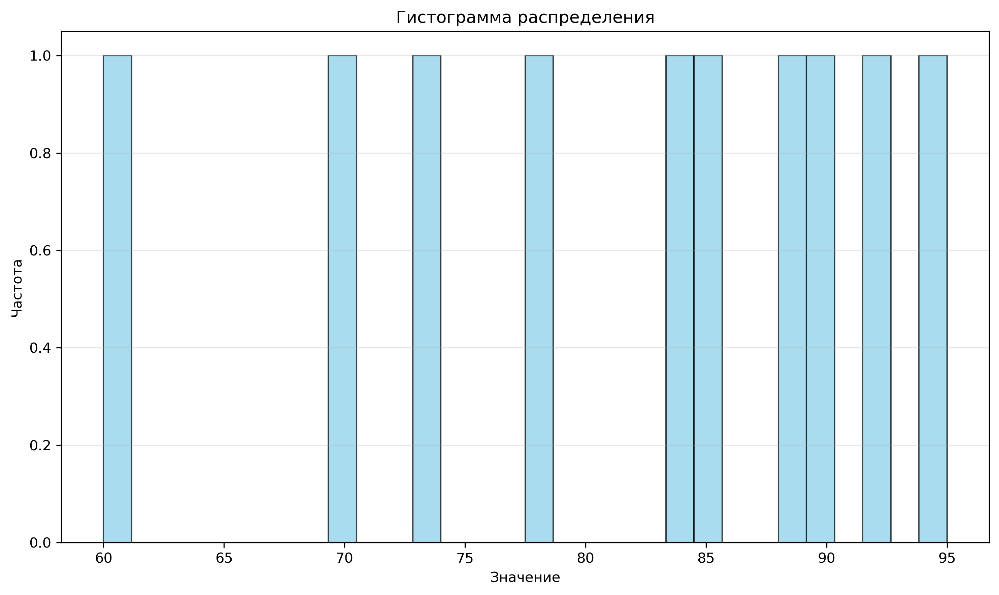
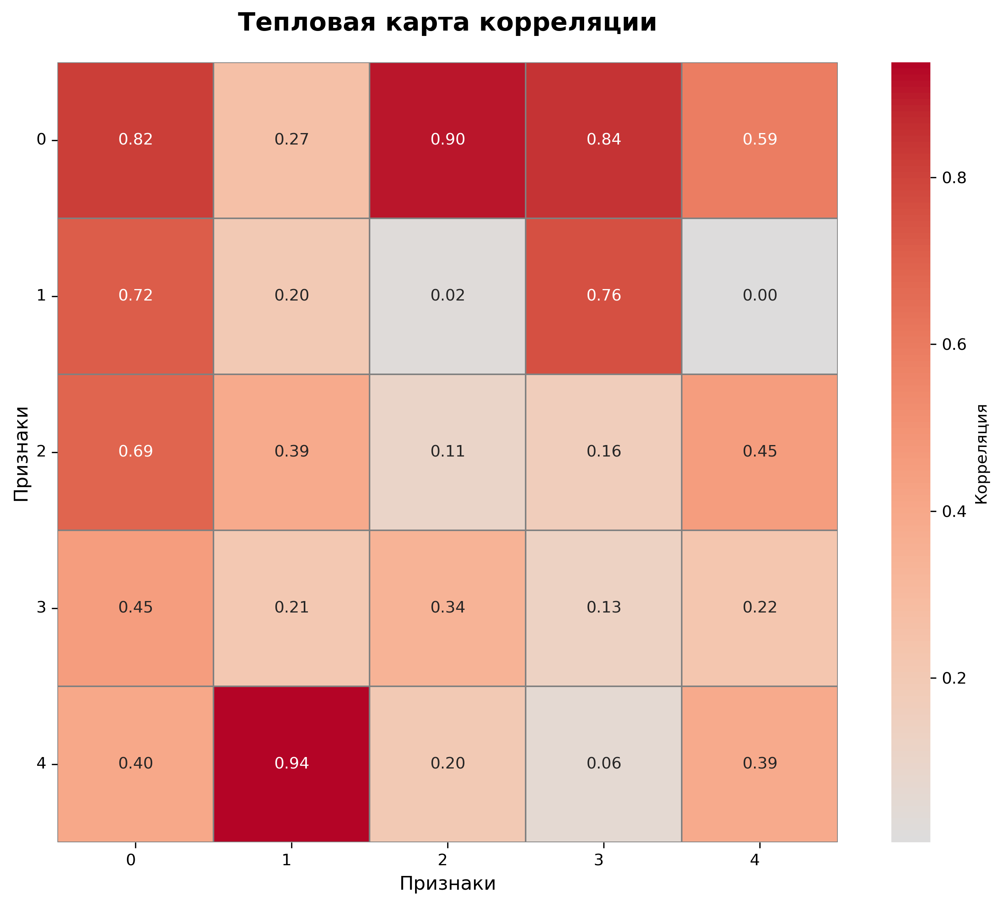
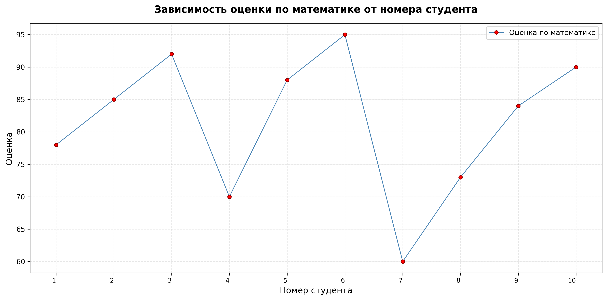

Лабораторная работа №2: Основы NumPy: массивы и векторные операции¶
Дисциплина: [Python]
Выполнил: Жохов Даниил, группа [3121]
Дата: [28/02/2026]
Цель работы¶
Освоить базовые и продвинутые возможности библиотеки NumPy для работы с многомерными массивами, реализовать функции линейной алгебры, статистического анализа и визуализации данных, а также обеспечить надёжность кода с помощью модульного тестирования.
Задание¶
1. Работа с массивами: создание, преобразование, базовые операции¶
| Задача | Описание | Решение | Нюансы |
|---|---|---|---|
create_vector() |
Создать вектор [0, 1, ..., 9] |
np.arange(10) |
Возвращает 1D-массив формы (10,) |
create_matrix() |
Матрица 5×5 со случайными числами | np.random.rand(5, 5) |
Значения в диапазоне [0, 1) |
reshape_vector() |
Преобразовать (10,) → (2, 5) |
vec.reshape(2, 5) |
Требует точного соответствия размера |
transpose_matrix() |
Транспонирование матрицы | mat.T или np.transpose() |
Для 1D-массива транспонирование не меняет форму |
Ключевой принцип: все операции выполняются векторизованно, без циклов — это обеспечивает высокую производительность NumPy.
2. Арифметические операции над массивами¶
| Функция | Описание | Реализация | Особенности |
|---|---|---|---|
vector_add() |
Поэлементное сложение | a + b |
Требует одинаковой формы массивов |
scalar_multiply() |
Умножение на скаляр | vec * scalar |
Автоматическое broadcasting |
elementwise_multiply() |
Поэлементное умножение | a * b |
Отличается от матричного умножения |
dot_product() |
Скалярное произведение | np.dot(a, b) |
Возвращает float, а не np.float64 |
matrix_multiply() |
Матричное умножение | a @ b |
Требует согласованных размерностей |
3. Линейная алгебра¶
| Функция | Назначение | Метод решения | Edge-кейсы |
|---|---|---|---|
matrix_determinant() |
Определитель матрицы | np.linalg.det() |
Возвращает float, возможна погрешность |
matrix_inverse() |
Обратная матрица | np.linalg.inv() |
Выбрасывает LinAlgError для вырожденных матриц |
solve_linear_system() |
Решение СЛАУ Ax = b |
np.linalg.solve() |
Требует квадратную A и совместимый b |
4. Загрузка и статистический анализ данных¶
def load_dataset(path: str) -> np.ndarray:
"""Загрузить CSV-файл и вернуть данные в виде NumPy-массива."""
return pd.read_csv(path).to_numpy()
def statistical_analysis(data: np.ndarray) -> dict[str, float]:
"""Выполнить статистический анализ одномерного массива данных."""
return {
"mean": float(np.mean(data)),
"median": float(np.median(data)),
"std": float(np.std(data)),
"min": float(np.min(data)),
"max": float(np.max(data)),
"percentile25": float(np.percentile(data, 25)),
"percentile75": float(np.percentile(data, 75)),
}5. Визуализация результатов¶
Описание задачи:
Построить и сохранить три типа графиков: гистограмму, тепловую карту корреляции и линейный график.
Как была решена:
- plot_histogram() — гистограмма распределения оценок с адаптивным числом бинов.

-plot_heatmap() — тепловая карта через seaborn.heatmap() с аннотациями и цветовой схемой coolwarm.

-plot_line() — линейный график «студент → оценка» с адаптивным отображением подписей оси X.

Нюансы:
- Использован бэкэнд matplotlib.use('Agg') для работы без GUI (важно для серверов и тестов).
- Все графики сохраняются в папку plots/ с высоким DPI (300) и bbox_inches='tight' для аккуратного кадрирования.
- Для 2D-данных в гистограмме выполняется .flatten() для преобразования в 1D.
6. Тестирование кода¶
Описание задачи:
Покрыть все функции модульными тестами с использованием pytest.
Как была решена:
- Файл test.py содержит тесты на корректность вычислений, обработку граничных случаев и проверку создания файлов визуализации.
- Использованы фикстуры tmp_path для изолированного тестирования сохранения файлов.
- Проверены исключения: ValueError, np.linalg.LinAlgError при некорректных входных данных.
Нюансы:
- Тесты на визуализацию проверяют не только отсутствие ошибок, но и факт создания непустого файла.
- Для тестирования load_dataset() создаётся временный CSV-файл, который удаляется после проверки.
Выводы¶
-
NumPy предоставляет мощный и эффективный инструментарий для работы с массивами: все операции векторизованы, что обеспечивает высокую производительность по сравнению с циклами на Python.
-
Линейная алгебра в NumPy реализована через подмодуль
linalg: важно понимать разницу между численно устойчивыми методами (solve) и прямыми вычислениями (inv), а также уметь обрабатывать вырожденные случаи. -
Статистический анализ и нормализация данных выполняются в несколько строк кода благодаря встроенным функциям NumPy, однако необходимо учитывать детали (например, параметр
ddofвstd). -
Визуализация через
matplotlibиseabornпозволяет наглядно представить результаты анализа. Важно настраивать бэкэнд для headless-сред и корректно сохранять графики. -
Тестирование с помощью
pytestобеспечивает надёжность кода: покрытие граничных случаев и проверка исключений помогают избежать ошибок в продакшене. -
В ходе работы закреплены навыки:
- работы с многомерными массивами,
- векторизации вычислений,
- интеграции NumPy с pandas и matplotlib,
- написания модульных тестов.
Исходный код¶
GITHUB - репозиторий с исходным кодом